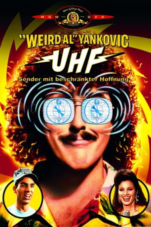
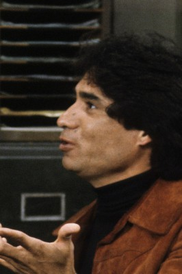

#4208 UHF - Sender mit beschränkter Hoffnung
Alternativ: UHF
 
 IMDB-Wertung: 7.0 / 10
IMDB-Wertung: 7.0 / 10  Metascore: 0
Metascore: 0 
Tagträumer George Newman hält es nicht lang bei einem Job – seine sprudelnde Fantasie kommt ihm immer in die Quere. Eines Tages heuert ihn sein Onkel an, den maroden Fernsehsender Kanal 62 zu übernehmen. George geht mit einem bizarren Programm – mit fliegenden Pudeln und Fischverlosungen – auf Sendung. Und prompt steigen die Quoten! Das gefällt dem Boss des mächtigen Konkurrenzsenders Kanal 8 überhaupt nicht. Mit allen Mitteln sabotiert er die aufstrebende TV-Station. Klar, dass die durchgeknallte Kanal 62-Crew sich das nicht gefallen lässt!
Jahr: 1989
Dauer: 97 Minuten
FSK: 12
Land: USA Studio: Orion PicturesTonspuren: DD2.0 - ,
Untertitel: Deutsch,
Auflösung: 1080p (1920x1016) Größe: 7833 MB
Genre: Komödie, Drama
Regisseur: Jay Levey
Drehbuch: Jean-François Henry
Soundtrack:
Darsteller:
 'Weird Al' Yankovic als George Newman
'Weird Al' Yankovic als George Newman- Victoria Jackson als Teri
 Kevin McCarthy als R.J. Fletcher
Kevin McCarthy als R.J. Fletcher- Michael Richards als Stanley Spadowski
- Anthony Geary als Philo
-  Trinidad Silva als Raul Hernandez
 Gedde Watanabe als Kuni
Gedde Watanabe als Kuni Billy Barty als Noodles MacIntosh
Billy Barty als Noodles MacIntosh- John Paragon als Richard Fletcher
 Fran Drescher als Pamela Finklestein
Fran Drescher als Pamela Finklestein- Sue Ane Langdon als Aunt Esther
 David Proval als Head Thug
David Proval als Head Thug Grant James als Killer Thug
Grant James als Killer Thug- Emo Philips als Joe Earley
 Robert K. Weiss als Bartender
Robert K. Weiss als Bartender- Bob Hungerford als Sy Greenblum
 George Fisher als Thug #4
George Fisher als Thug #4- Belinda Bauer als Mud Wrestler
- Kenwick Cook als Party Guest , uncredited
- Jeff Howard als Donor at Telethon , uncredited
- Allan Lay als Surfer , uncredited
- Gigi Orsillo als Spatula daughter , uncredited
 David Bowe als Bob
David Bowe als Bob Stanley Brock als Uncle Harvey
Stanley Brock als Uncle Harvey- Lou B. Washington als Cameraman
- Vance Colvig Jr. als Bum
- Nik Hagler als FCC Man
- Eldon G. Hallum als Spatula Husband
- Sherry Engstrom als Spatula Wife
- Sara Allen als Spatula Neighbor
- John Cadenhead als Crazy Ernie
- Francis M. Carlson als Blind Man
- Ivan Green als Earl Ramsey
- Adam Maras als Joel Miller
- Travis Knight als Billy
- Joseph Witt als Little Weasel
- Tony Frank als Teri's Father
- Billie Lee Thrash als Teri's Mother
- Barry Friedman als Fletcher Cronie #1
- Kevin Roden als Fletcher Cronie #2
- Lisa R. Stefanic als Phyllis Weaver
- Nancy Johnson als Big Edna
- Debbie Mathieu als Betty
- Wilma Jeanne Cummins als Little Old Lady
- Cliff Stephens als Animal Deliveryman
- Jim West als Band: Guitar
- Steve Jay als Band: Bass Guitar
- Jon Schwartz als Band: Drums
- Kim Bullard als Band: Keyboard
- Barry Hansen als Whipped Cream Eater
Datei: X:\1989\UHF - Sender mit beschränkter Hoffnung (1989, FSK12, 1920x1016).mkv seit 29.07.2016
Festplatte: HD 1987-1991
 Es gibt insgesamt 54 Filme in der Gruppe '1989'
Es gibt insgesamt 54 Filme in der Gruppe '1989'